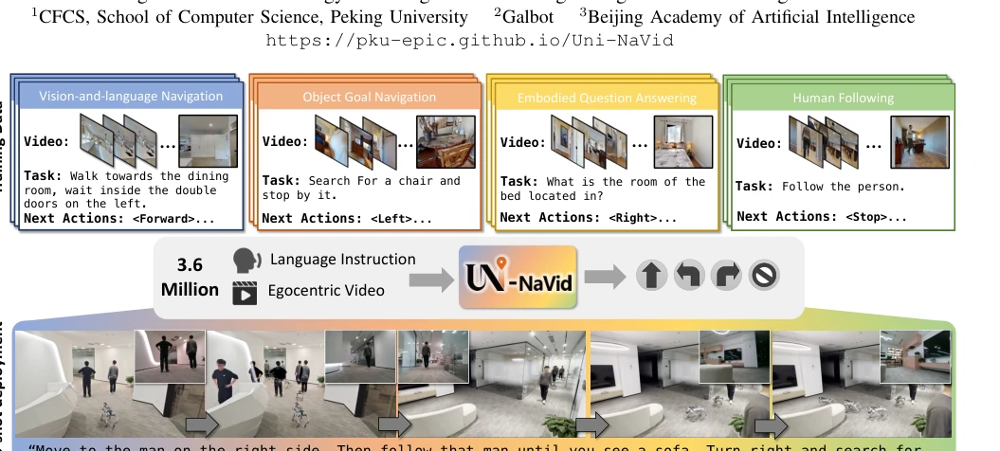
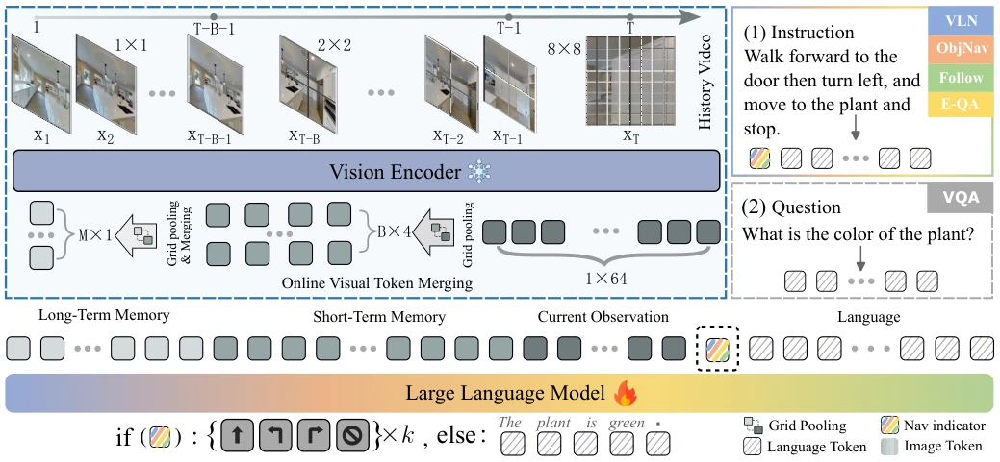
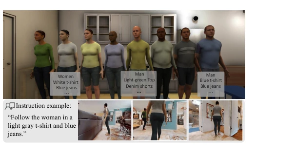
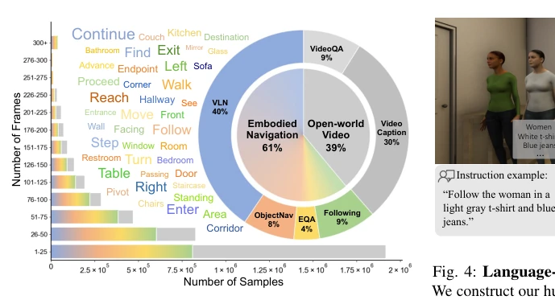
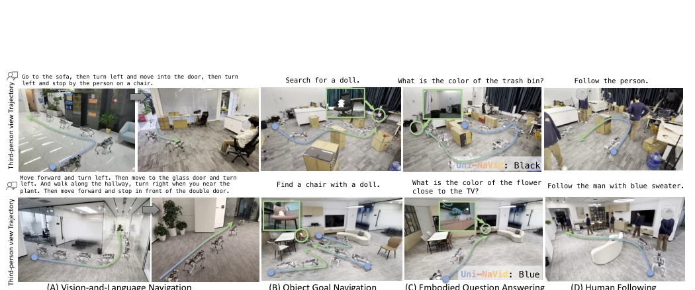
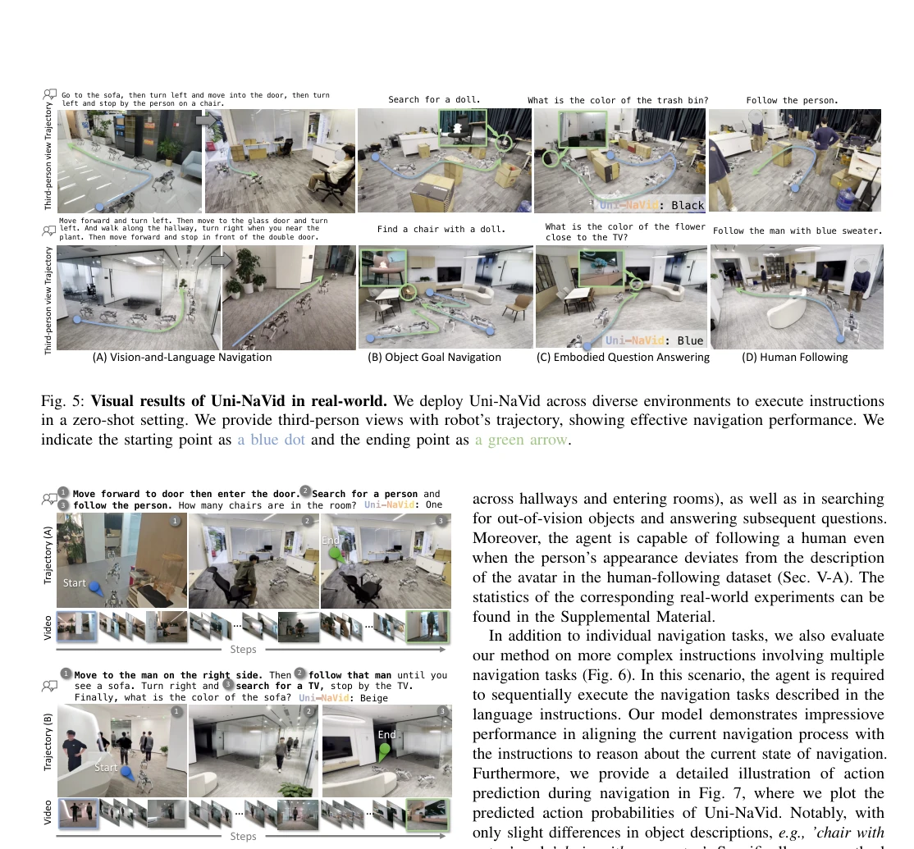
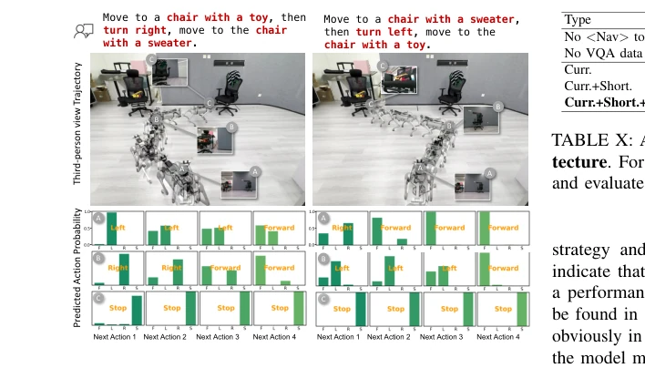
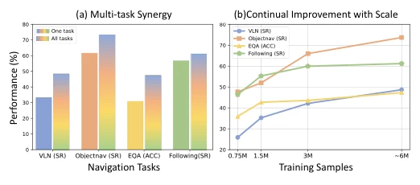
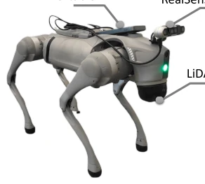
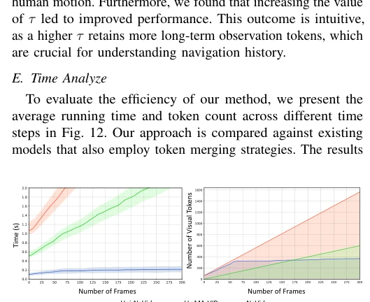

Uni-NaVid attempts to unify the four major tasks of embodied navigation using a single large model, which sounds promising, yet "unification" often implies "mediocrity". However, this paper does indeed have substance. It forgoes flashy discrete action graphs, directly employing RGB video streams in continuous environments paired with language instructions to output low-level actions. The most striking feature is the Online Token Merge, which compresses video frames to their essence, achieving an inference speed of 5Hz, which is critically important for actual deployment; otherwise, LLM inference is as slow as a snail. Although the data still relies primarily on simulation, the authors managed to compile 3.6M samples plus 2.3M real videos and even tested on the real robot Unitree GO2. Overall, it is a deployable VLA navigation solution, but how long the claim of "generalization" can withstand in complex scenarios depends on future performance, after all, simulation data is ultimately not the real world.
Embodied navigation is a fundamental capability for robots, yet the current landscape is characterized by "many specialists, few generalists". Existing methods mostly target single tasks; for instance, VLN [44] handles only navigation, while ObjectNav [12] handles only object finding. Although some works attempt unification using LLMs, such as InstructNav [61], they often rely on discrete graphs or predefined nodes, leading to poor flexibility and slow inference. While NaVid [111] utilizes video, its long-sequence processing efficiency is low. This results in models either reacting sluggishly or exhibiting poor generalization when deployed in the real world, manifesting a significant Sim-to-Real gap. Uni-NaVid aims to break this fragmentation by constructing a unified framework capable of simultaneously handling VLN, ObjectNav, EQA, and Human Following, while supporting real-time decision-making in continuous environments. It seeks to resolve the computational bottlenecks and task fragmentation of existing VLA models under long video streams, enabling robots to truly "understand human language" and also "run fast".
The overall pipeline follows a typical VLA architecture: a visual encoder extracts Tokens, which are compressed via Online Token Merge before being fed into an LLM to generate actions. The core innovation lies in Online Visual Token Merging. Drawing inspiration from human memory models, it categorizes visual Tokens into current, short-term, and long-term memory. Current frames are compressed using Grid Pooling, short-term frames (the most recent 64 frames) are also compressed, while long-term frames are merged based on similarity. If the similarity between a new frame and an old frame exceeds a threshold, they are fused; otherwise, a new entry is added. This significantly reduces the number of input Tokens for the LLM, preventing memory explosion. The LLM component utilizes Vicuna-7B, with input containing the task indicator `<NAV>`, predicting 4 steps of actions in one go and supporting asynchronous deployment. Regarding training data, in addition to 3.6M simulation navigation data, 2.3M real-world VQA data is mixed for auxiliary training to enhance scene understanding capabilities.
实验Experiments
实验覆盖了 VLN-CE (R2R, RxR), ObjectNav (HM3D), EQA (MP3D) 及新构建的 Human Following 基准。在 R2R 上 SR 达 47.0%，优于 NaVid [111] 的 37.4%。ObjectNav 在 HM3D 上 SR 73.7%，SOTA。Human Following 任务更是首创了语言描述基准，Uni-NaVid 在 SR 上达 71.93%。消融实验证明多任务训练有协同效应，且 Token Merging 策略在保持性能的同时将推理时间降至 0.2 秒/次。真机实验展示了在 Unitree GO2 上的零样本部署能力，轨迹平滑，能处理复杂指令。
Experiments cover VLN-CE (R2R, RxR), ObjectNav (HM3D), EQA (MP3D), and a newly constructed Human Following benchmark. On R2R, SR reaches 47.0%, outperforming NaVid [111]'s 37.4%. For ObjectNav on HM3D, the SR is 73.7%, achieving SOTA. The Human Following task pioneers a language description benchmark, where Uni-NaVid achieves an SR of 71.93%. Ablation experiments demonstrate that multi-task training yields a synergistic effect, and the Token Merging strategy reduces inference time to 0.2 seconds per inference while maintaining performance. Real-robot experiments demonstrate zero-shot deployment capability on the Unitree GO2, featuring smooth trajectories and the ability to handle complex instructions.
其他图片Other Figures

Fig. 1: Uni-NaVid learns general navigation skills across four embodied navigation tasks using 3.6 million navigation samples. Uni-NaVid only takes online RGB video frames and language instructions as input and output actions, achieving general navigation ability in a real-world deployment.

Fig. 2: Pipeline of Uni-NaVid. Our method takes only single-view RGB frames {x1, · · · , xT } and a natural language instruction I as input. For each frame, we extract 64 visual tokens using the vision encoder and then use online token merging to accelerate the model while retaining compact visual information. The merged tokens and instruction tokens are sent to the large language model to obtain actions for navigation or answers for embodied question-answering.

Fig. 4: Language-described human following benchmark. We construct our human-following benchmark based on Habitat 3.0 [68] by incorporating textual descriptions for each avatar (eight in total, top row). The robot is required to comprehend these descriptions and accurately follow the designated indi- vidual in crowded environments.

Fig. 3: Visualization of training data. We visualize the combination of training data (5.9M), video frame counts, and the most common words in navigation instructions.

Fig. 5: Visual results of Uni-NaVid in real-world. We deploy Uni-NaVid across diverse environments to execute instructions in a zero-shot setting. We provide third-person views with robot’s trajectory, showing effective navigation performance. We indicate the starting point as a blue dot and the ending point as a green arrow.

Fig. 6: Vivusal results of Uni-NaVid on compostional tasks. The agent is required to execute complex instructions involving multiple navigation tasks. Our method successfully accomplishes these navigation tasks sequentially. Notably, both the instructions and environments are novel to our approach. Please refer to the supplementary videos.

Fig. 7: Action prediction on the VLN tasks. We evaluate Uni-NaVid on challenging open-vocabulary objects, requiring it to recognize the target objects and follow the specified motions. We provide the predicted action probabilities (for the next four actions) to demonstrate its break-in navigation capability.

Fig. 8: Comparsion on multi-task training and data scale. (a) We present the multi-task synergy of our method, illustrating the performance comparison between training with a single task and training with multiple tasks; (b) we demonstrate the performance across different navigation tasks under varying numbers of training samples.

Fig. 10: Robot setup. We use Unitree GO2 as our embodiment, and we mount RealSense D455, a portable Wi-Fi and a LiDAR- L1. Note that, our model only takes RGB frames as input. The portable Wi-Fi is used for communication with the remote server and the Lidar is used for the local controller API of Unitree Dog.

Fig. 12: Time efficiency visualization. We provide the average running time and the number of tokens across different time steps.